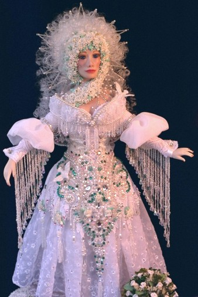

"Olivia" I have a particular fondness for angels....I believe that they are always in our midst providing us with guidance and protection. "Olivia" is my tribute to those angels who guide, protect and inspire me and those I love. She was a heartfelt gift to my mother, and I imagine that when mom earns her wings, this is what she'll look like. Made of Super Sculpey, Olivia is 18 inches tall with hand beading and embroidery. The roses around her face are also hand-sculpted from polymer clay and her hair was rooted individually. She was a project that took nearly 3 months of utter joy to complete.  |